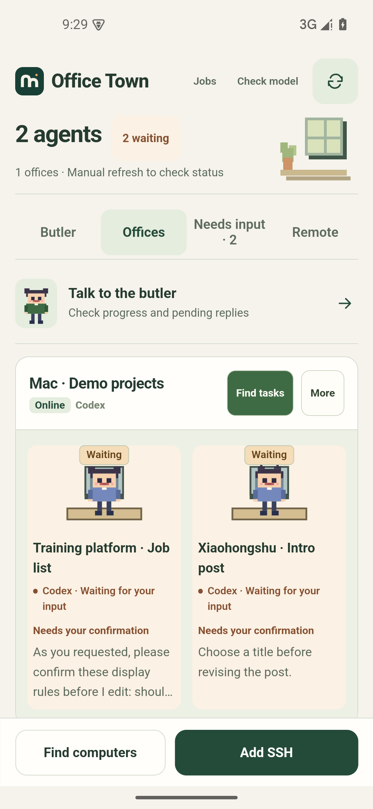

Pick up your AI work from your phone.
Keep Codex and Claude Code sessions from several computers together. Read what happened, check the history, and reply to the original session.
Watch the 1m 53s app demoConnect to your Mac or Linux computer over SSH. No agentBridge installation is needed on the computer.

Coding projects and Xiaohongshu posts
Ask which session needs a reply, send details for the training platform, and revise a Xiaohongshu draft.
Why I’m building Office Town
I want one place to keep track of the work.
The more AI tools I use, the more places there are to check. Tasks and records end up spread across sessions and computers. Sometimes I lose track of what got done.
I also want routine tasks to need less attention. The next step is to let agents plan and handle work within boundaries I set, asking when a decision needs me.
Autonomous task management is still planned. Today, the butler can query records, discuss progress, and help draft replies. You send instructions from an employee card.
What you can do today
Work continues on your computer. Your phone lets you check it and reply.
Continue the same session
Read output and send a message back to the original Codex or Claude Code session. Check several computers in one app. Refresh to update task status.
Ask the butler about progress
Configure your model, then ask which tasks need a reply. The butler can look up records. Help me reply on an employee card writes a draft for you to edit and send.
Talk through a task
Use voice input or start an in-app call. Set up and test the chat model, speech recognition, and playback first.
Get your first reply through
Connect your computer first.
You can set up the butler and speech later.
Connect your computer
- Use the LAN scan in the app, or enter your SSH address, username, and password or private key.
- Find and import existing Codex or Claude Code sessions on that computer.
- Open an employee card to read output and send a message back to the session.
Start a Codex or Claude Code session on your computer first. Tap refresh to get the latest status. Away from your home network, use a reachable SSH address or your own FRP connection.
For help with a reply, configure the butler model and request a draft from the employee card. Drafts use the last refreshed records. Choose one, edit it, and send it yourself.
Set up chat and voice
- Open the butler model settings. Enter your provider URL, model name, and API key, then save and verify the connection.
- Send a text message and check that the model replies.
- Test speech playback in voice settings, then test recognition with the microphone beside the chat input.
- Once both work, start a call with the butler and allow microphone access.
The English edition uses English controls, butler replies and speech settings. Original task records keep their own language. If system speech services are unavailable, you can configure a Bailian / DashScope Beijing-region API key in the cloud voice settings. Chat and speech can use different keys.
The butler can query tasks and discuss their output. Send instructions from an employee card.
Install and update
Requires Android 7.0 or later. Download and install the APK. On your first install, Android may ask you to allow installation from your browser. Future English releases can update this English app. It installs separately from the Chinese edition and uses its own settings and records.
APKs are published on GitHub Releases and signed with the same release key. If the download does not start, find agentbridge-en.apk under All releases.
0.5.45: Clearer task cards and chat replies. Independent sessions in one project stay separate, and a late refresh preserves newer replies and deleted employees. Chinese and English APKs are available.
Data and privacy
Settings, conversations, and records are stored in the app’s private storage on your phone. Credentials are encrypted with Android Keystore. The app has no analytics reporting.
Butler chat sends relevant task information to the model provider you configure. With Bailian cloud speech enabled, audio or playback text is sent to Bailian. Read the security notes for details.
Start with the tasks you already have
Android 7.0 or later. About 2.9 MB.